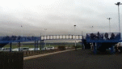
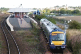
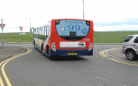
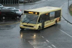

Williamsons Taxis
58 MAIN STREET
postcode: KY16 0HE
telephone: (01334) 839279
www.williamsonstaxis.co.uk
Williamsons Taxis
58 MAIN STREET
postcode: KY16 0HE
telephone: (01334) 839279
www.williamsonstaxis.co.uk

AM/PM Taxis
Junction Road
postcode: KY16 0AA
telephone: 07834 642 056
St Andrews Quick Taxis
telephone: 07938 151900
24 7 Taxis
telephone: (01334) 834777

Scotrail
Junction Road
postcode: KY16 0AA
telephone: 08457 484950
www.livedepartureboard.co.uk
Train Tracker 0871 200 4950

Stagecoach
telephone: (01383) 660880
www.facebook.com/StagecoachBus

Moffat & Williamson
telephone: (01382) 541159
www.facebook.com/moffatandwilliamsonltd
Go-Flexi Taxibus
Leuchars Railway Station
telephone (01382) 540624
Mon - Thur 7.00am - 6.15pm
Fri 7.00am - 11.30pm
Sat 8.15am - 11.30pm
If any of the above information is wrong and/or if businesses want to be added, please contact the Community Council.